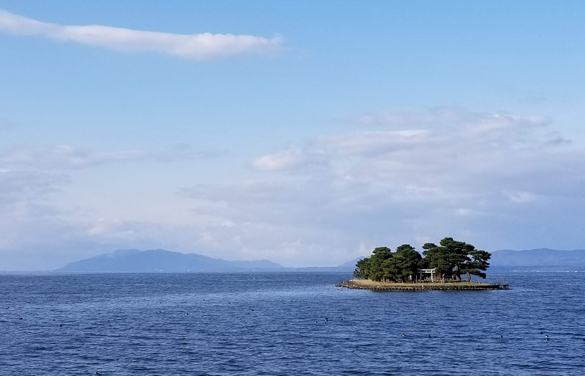
近くのおすすめスポット
もしお時間がございましたら是非、島根観光をお楽しみください！
#出雲エリア #松江エリア #グルメ
出雲エリア
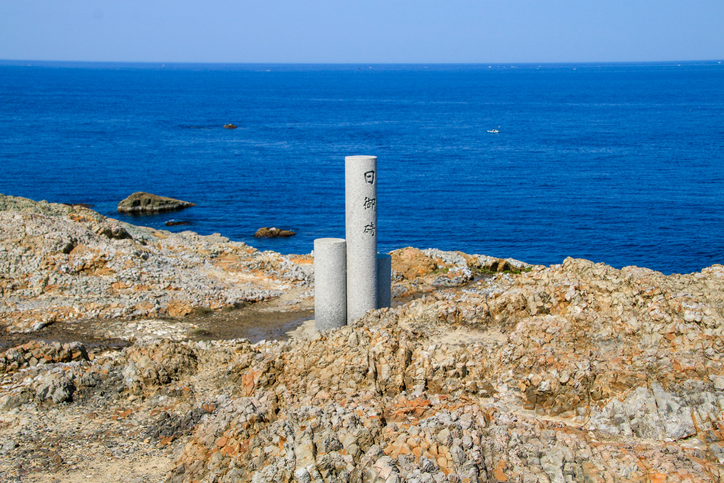
日御碕神社
天照大神と須佐之男命が鎮座される神社。「日の本の夜を守る」。厄除けや縁結びのご利益がると言われる。
#縁結び #パワースポット
住所 島根県出雲市大社町日御碕455
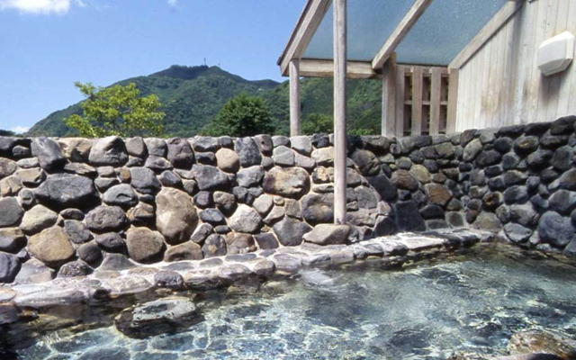
出雲須佐温泉ゆかり館
須佐神社に隣接する温泉宿泊施設（日帰り可）。露天風呂や気泡浴、うたせ湯など6種類の温泉がある天然温泉。1人600円。
#温泉 #須佐神社 #良縁 #家内安全
住所 島根県出雲市佐田町原田737
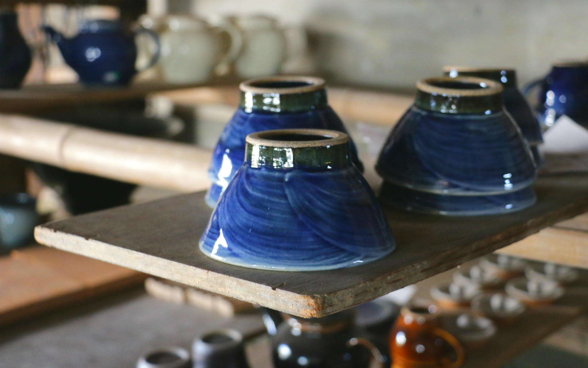
出西窯
出西窯の器は飾り気のないシンプルなもので、「道具としての使いやすさ」をこだわりとする。
#伝統 #カフェスペース #ベーカリー
住所 島根県出雲市斐川町出西3368
松江エリア
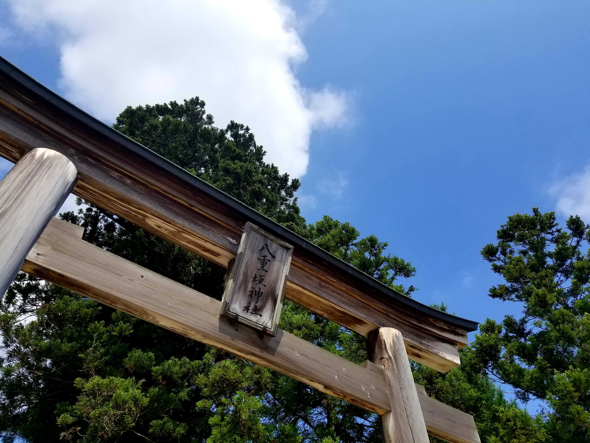
八重垣神社
縁結びなどのご利益。「鏡の池」と呼ばれる神池がある。「良縁占い」が有名。
#良縁 #子宝
住所 島根県松江市佐草町227
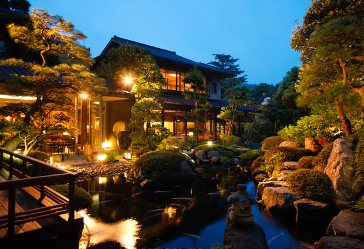
玉造温泉
約1,300年前から湧き出ている、"玉造温泉"は古来より「神の湯」と言われるほど美肌効果があるそう。
"湯薬師広場たらいの湯"では、"玉造温泉"の源泉をテイクアウトできる。
#美肌 #温泉 #湯閼伽(ゆあか)の井戸 #別名、恋来井戸
住所 島根県松江市玉湯町湯町
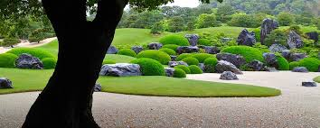
足立美術館
横山大観の作品を中心とした近代日本画の他、北大路魯山人の陶芸作品を展示。敷地内に50000坪におよぶ6つの日本庭園がある。
#紅葉 #日本庭園
住所 島根県安来市古川町３２０
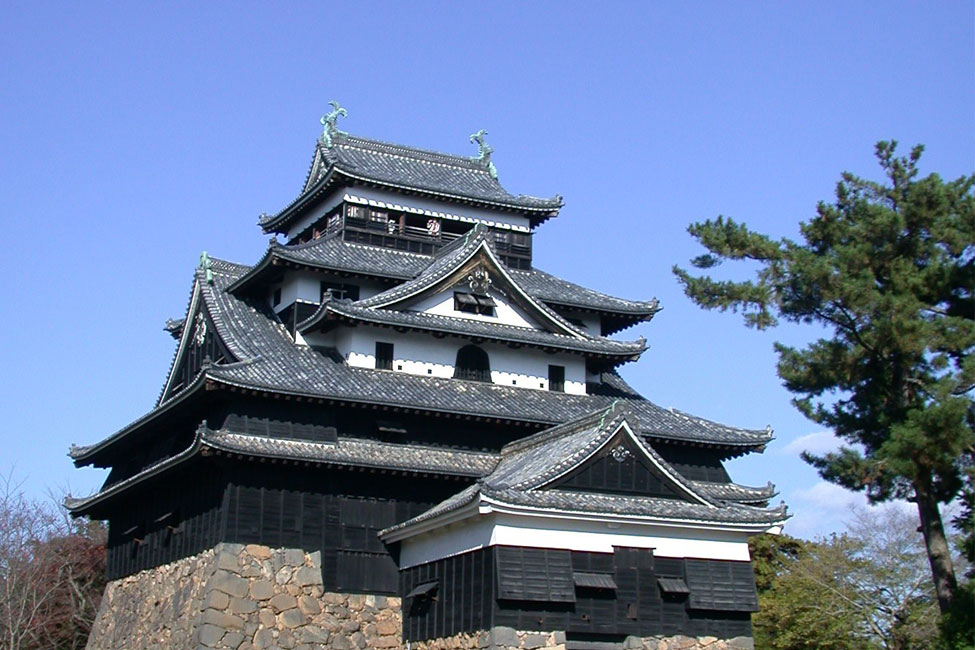
松江城
全国で現存する12天守のうちの1つで、“国宝”。唯一の正統天守閣ともいわれている。日本に現存する数少ない江戸時代の城の一つ。
#国宝 #松江のシンボル #五層
住所 島根県松江市殿町１−５
グルメ
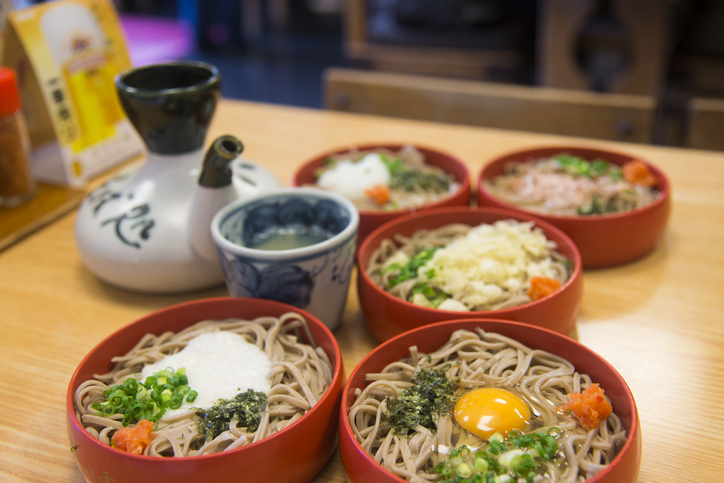
出雲そば
そばそばそばそば
#とりあえず蕎麦 #三大蕎麦
住所 そばそばそばそば
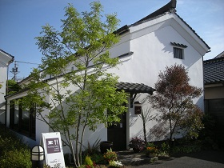
古民家カフェ
出雲市にある、cafe naka蔵は9時開店で、新鮮野菜やトーストがセットになったモーニングが人気。
必ず行きたい場合は予約がおすすめです！フレンチトーストやホットサンドもあります。
#ボリュームがすごい #野菜がおいしい #ゆず茶も美味しい #チーズサンドもおすすめ
住所 島根県出雲市今市町中町６８９
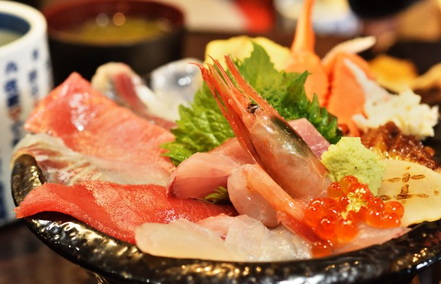
海鮮
のどぐろ等の魚はもちろん、宍道湖でとれるあさりも名産。
#のどぐろ #錦織圭 #あさり